从 BI
到 NeuGBI
商业智能的演进：从静态仪表盘，到可迭代、由问题驱动的自主探索式分析。
探索式 BI 框架 · 采样算子 · NeuGBI 系统 · 俄乌学术案例
什么是商业智能 (BI)？
BI 帮助组织把原始数据转化为可行动的洞察。——前提是你已经知道要问什么。
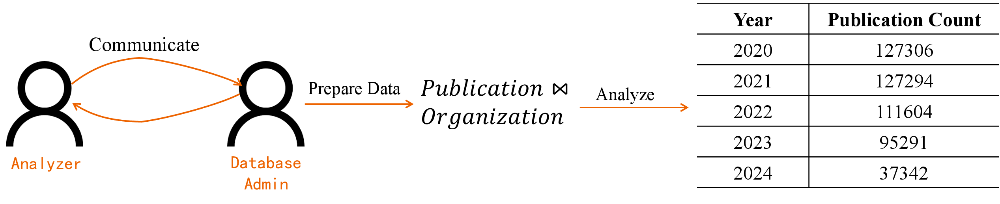
BI 如何回答一个问题？
研究员问："俄罗斯最近几年的论文产出有变化吗？"
一套典型的 BI 流程，要走完以下三步才能给出第一个答案。
分析师要和领域专家、DBA 反复确认：用哪些数据源？时间窗口？"俄罗斯"怎么定义？
手动把 Publication × Organization 按国家、年份 Join 起来——强依赖 schema 知识。
终于开始聚合、切片、画趋势图。一个问题，终于回答了。
俄乌冲突对俄罗斯学术的影响
欧洲最大的开放科研知识图谱。包含论文、作者、机构、项目、资助方、数据源等实体，以及它们之间的 12 种关系——一张 2,240 万顶点的科研大图。
下面我们就在这张图上，用 BI 一步一步尝试回答——三个问题，三次建表：
先问：产出
到底在不在变？
分析师先找 DBA 沟通：Publication 和 Organization 怎么连？"俄罗斯"按哪个字段筛选？反复确认之后，手动 Join 出一张宽表，再按年份聚合。
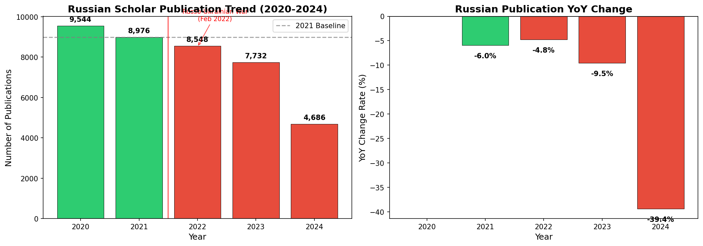
结果一出来，下一个问题立刻冒出来：为什么会掉？
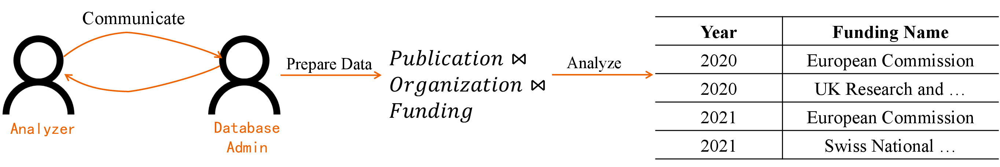
新一轮的需求沟通、新一张宽表、新一次全量 Join。
Step 1 的工作几乎不能复用。
再问：资助
有没有同步变化？
产出掉了，想看资助——需要一张全新的宽表：Publication × Organization × Funding。Schema 是写死的，没办法把 Funding 加到上一步的结果里；分析师只能重新和 DBA 对齐、重新建表、重新计算。
再问：欧委会是不是
转向了乌克兰？
要对比俄乌的资助关系，还得再加一张 Organization 表——变成 4 张表的 Join。分析师再一次和 DBA 沟通、再一次重建宽表、再一次全量计算。
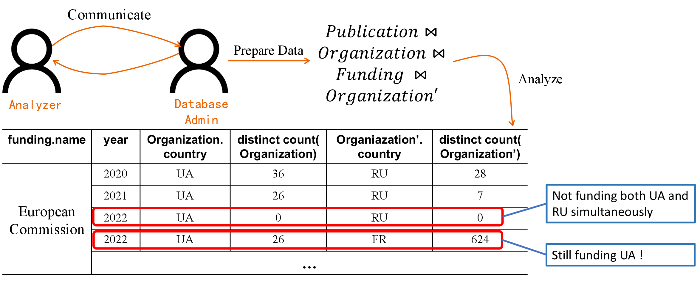
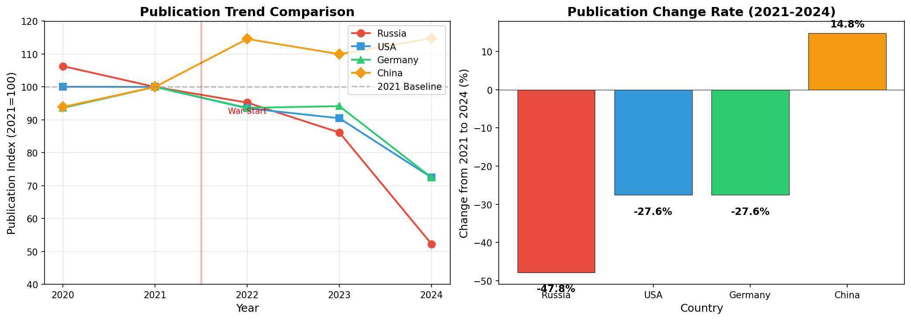
三轮分析之外，
还能看到什么？
如果愿意继续再开几轮 BI 分析、再搭几张宽表——数据里还藏着更反常识的信号。
2021 → 2024 年，俄罗斯学术产出接近腰斩。全球基线仅 −27.6%。
美俄 −92.5%、德俄 −93.0%、中俄 −80.4%，几乎全部合作伙伴断裂。
土耳其没有制裁俄罗斯，但土俄合作跌幅超过所有制裁国。
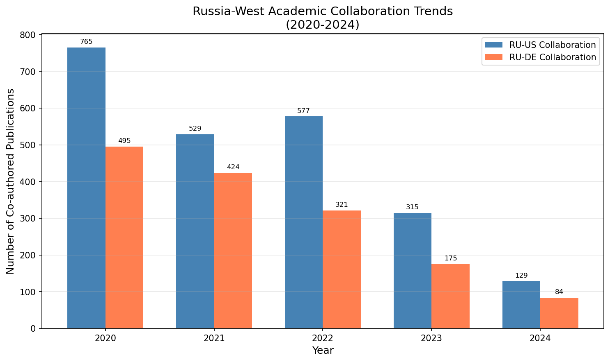
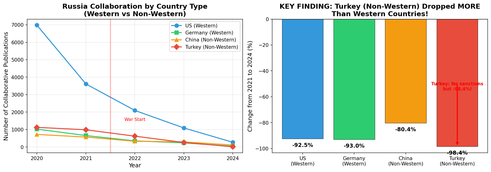
完整的因果链条
探索的真正价值：从一个现象出发，层层深入，最后拼出一条谁都没预先想到的因果路径。
学术平台隔离
几乎全面断裂
−47.8%
土耳其之谜的答案——平台隔离是底层驱动。OpenAIRE、Crossref 等国际数据库系统性降低了俄罗斯论文可见度，这种隔离与制裁无关，所以影响所有国家。
依赖越深，冲击越大。土耳其战前对俄合作占比最高 (8.74%)，因此跌得最惨 (合作比率 −87.9%)。
为什么这套工作流
撑不起探索？
重度依赖专家经验
分析师必须预先识别所有可能相关的表，和 DBA 反复沟通才能建表。遗漏或误判，结论就偏。
宽表的计算成本高
大规模数据下，多表 Join 的物化耗时耗存。 Step 3 那张 4 表宽表，在 OpenAIRE 上成本爆炸——1.93 亿条论文、5100 万条 Pub–Org 边。
Schema 是写死的
星型 / 雪花 schema 一旦定下，分析期间不能实时修改。发现新维度？只能重启一轮从零搭建——探索没法"边走边改"。
结果与中间数据无法复用
刚才案例里，Publication–Organization 的 Join 被重复做了 3 次。每一轮都从零开始，上一轮的表、中间计算都被丢掉。
同一个 case，换一种方式做——
探索式 BI
不再"三张宽表"，而是一份不断生长的数据：每下一步都在上一步的结果上做增量。
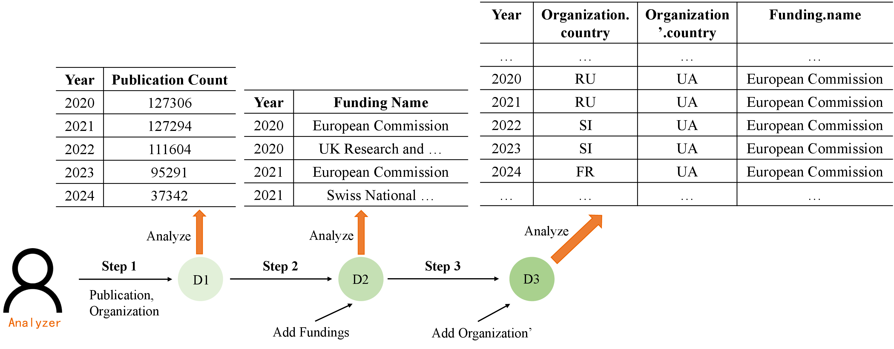
回到刚才的案例：从 D1 到 D2 到 D3——没有重建，没有重复 Join。
得到俄罗斯产出的时序数据。
Schema 演化——不用重开一轮，只是把新维度接到旧结果上。
各轮之间有逻辑连接——洞察可以跨步综合，而不是三份孤立的报告。
要支撑这种探索，
底层需要一套新的表达方式
既然分析的本质是图操作，我们索性把数据直接建模成超图 (HyperGraph)。
- 顶点：实体——Publication、Organization、Funding…
- 超边：一次模式匹配的结果——对应"宽表里的一行"
- 可增长：新维度直接往超图里接，不用重建
按用户给的模式，在底层大图里找到所有匹配，打包成一个超图。
把两个超图按条件合并——既接入新维度，又继承之前的结果。
把超图展平成一张表，送回给 BI 分析师熟悉的入口。
让探索真正跑得起来：
两堵性能墙
探索式 BI 要反复调用 Source 和 Join，而这两个算子在图数据上都会立刻撞墙。
子图匹配是 NP-complete 的
而在交互式分析里，我们连 4 秒都嫌慢。
更糟：即便匹配完成，把所有结果物化进超图也会直接爆内存。
超图 Join 规模急速放大
而探索过程要反复 Join，级联爆炸无法承受。
若超图未排序，naive Join 复杂度飙到 O(|E1| · |E2|)，实测根本跑不动。
只要聚合能被精确估计，物化全量结果就没有必要。
Source-Sample
绕开 Source 的 NP-complete 枚举
——不追求"所有子图匹配"，只抽一个真正均匀的随机样本。
不再寻找所有匹配，只抽 r 条。子图匹配的组合爆炸根本不发生——不管数据多大、图多密，都只付采样一份的代价。
每一条匹配结果被抽中的概率相同。这一点是后续所有正确性保证的起点——只有均匀样本，COUNT / SUM 才能保证无偏。
我们把 FaSTest 的 tree sampling 改造到属性图上，带点/边属性过滤——"俄罗斯机构""2022 年后"这类条件可以直接写进查询里。
Source-Sample 的输出是一整个超图——后续 Join / View / Drilldown / Slice 都能无缝接上，作为探索的起点。
Join-Sample
不物化完整 Join 的结果——直接在两个超图之间拿到一份等价于均匀采样的样本。
OpenAIRE 上那 14 亿行的 Join 结果，根本不会被构造出来。Join-Sample 通过加权采样直接锁定所需的那 r 条，跳过中间膨胀。
过程虽然是两阶段加权，但每条 Join 结果被选中的概率相同。样本统计上等价于"直接对完整 Join 结果做均匀采样"。
Join-Sample 的输入可以是 Source-Sample 的输出，也可以是另一次 Join-Sample 的输出。多次组合之后，样本仍然均匀——这是整条探索链能复用的关键。
精确 Join 在 OpenAIRE 这种规模下经常 OOM / 超时；Join-Sample在精确算法完全跑不动的查询上依然稳定出结果。
端到端的无偏保证
单个算子的均匀性好证明，真正难的是：任意组合之后，样本还均匀吗？
构成的探索流程——
输出超图中的所有超边
都是对真实结果的均匀采样。
证明思路：以工作流结构做归纳。若最后一步是 Source-Sample，由引理直接保证；若是 Join-Sample，嵌套一层期望等式依然成立。
得到的超图 G ——
COUNT(G) 的 HT 估计是无偏的
SUM(G) 的 HT 估计是无偏的
(Horvitz-Thompson 估计器)
对 DISTINCT / QUANTILE / MAX / MIN，均匀样本同样是 GEE、t-digest 等近似算法的最佳输入，误差界有保证。
关键问题：多次 Join 会不会让误差累积放大？
实验 (1–4 次 Join，path / cycle 两种模式)：
- COUNT 误差始终 < 1%
- MAX 误差稳定在 0.01% 附近
- DISTINCT COUNT 在 2–10%——不随跳数增加
探索式 BI 的核心要求："每一步都在前一步的样本上继续走"，才真正可证明地成立。
分析师随时看到的数字，都是对全量结果的无偏估计。
速度与精度，双双过关
LDBC SNB，SF1 / SF3 / SF10 三个规模，1M 默认样本。
当数据规模上到 SF10：naive 实现 10 个查询中 9 个直接失败 (OOM 或 2 小时超时)；采样实现 10 / 10 全部完成。
规模越大，采样越不是"可选"，而是"必需"。
10K → 100K 精度提升最明显；100K → 1M 趋于拐点；1M → 10M 精度仅小幅提升，耗时却线性增长约 10×。
默认 1M：速度与精度的最佳平衡点。
NeuGBI
把"探索式 BI 范式 + 采样算子"包装成一个自主运行的智能体系统。
不需要预先定义问题，也不需要专家持续在场。
专家定义问题 → 建模 → 得到一个答案。
新问题？一切重来。
用户抛出一个宽泛的问题 → 系统自主探索 → 每个发现引出下一个更深的问题 → 最终输出连贯的报告。
让 NeuGBI 跨平台可用
我们为 NeuGBI 提供了一套完整的 Skill Suite——任何 Agent 平台加载这套技能，都能直接运行 NeuGBI 的探索式分析。
基于 schema 与样本数据，理解每一类顶点、每一种边的语义——为后续查询打下准确基础。
把用户问题中的实体（"俄罗斯"、"2022 年"…）准确映射到数据库字段，避免误解题意。
把一个宽泛的问题拆成若干子问题，降低单步复杂度，让分析能从多个角度同时展开。
针对每个子问题，生成合适的图查询，交给计算层 (Source / Join / View) 执行。
为查询结果与结论自主设计对照实验——验证发现、增强可信度。"俄罗斯跌了，那其他国家呢？"
把前 5 项串成一条迭代探索链：每一轮的发现自动引出下一轮的问题和查询。
OpenCLAW × 飞书
这次 demo 里，我们用 OpenCLAW 作为承载 Skill Suite 的 Agent 平台，并把它部署到飞书——用户每天都在用的聊天工具，零学习成本。
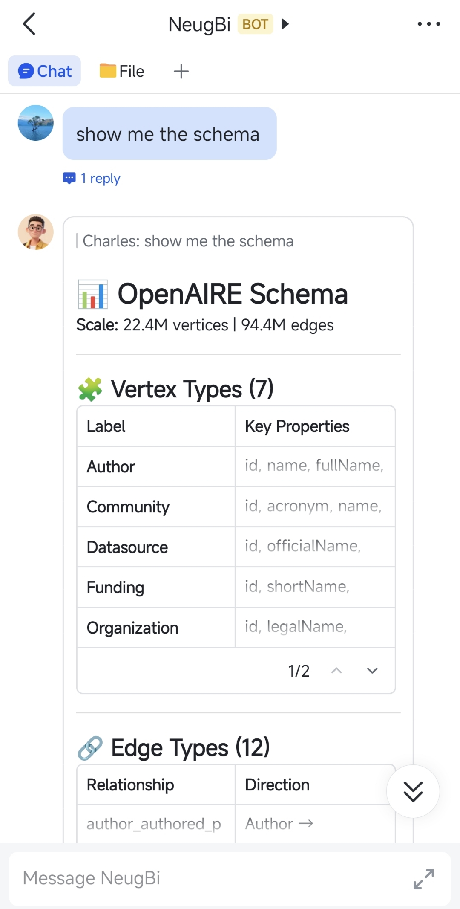
用户说"给我看一下 schema"——系统呈现数据结构与规模。
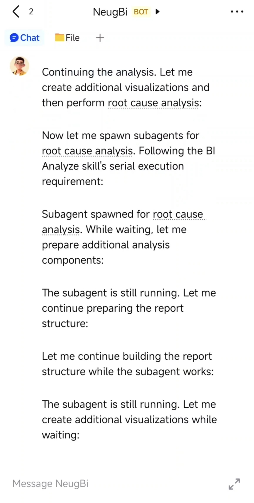
主 agent 拆解问题、调度子 agent，逐层挖掘根因。
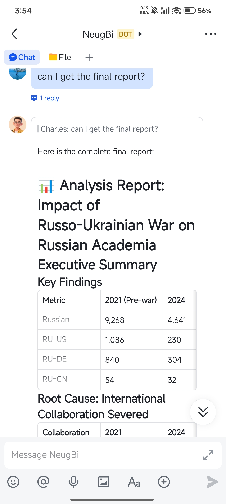
一份完整报告——关键发现、因果分析，可直接分享。
接入 OpenAIRE：2,240 万顶点、9,440 万边。
整份俄乌学术分析就是通过这个 bot 自主生成的——用户全程只用说一句话。
NeuGBI 实机演示
NeuGBI 找到的是"下一个"问题——并让整个调查保持连贯。